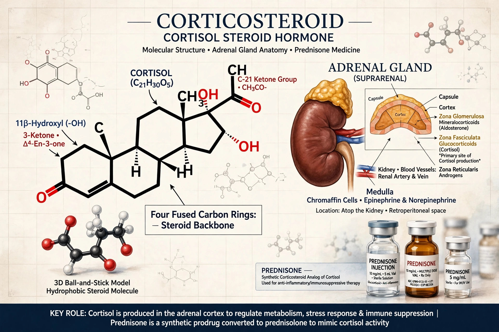

Corticosteroids are a class of steroid hormones that are produced in the adrenal cortex of vertebrates, as well as the synthetic analogues of these hormones. Two main classes of corticosteroids, glucocorticoids and mineralocorticoids, are involved in a wide range of physiological processes, including stress response, immune response, and regulation of inflammation, carbohydrate metabolism, protein catabolism, blood electrolyte levels, and behaviour.
| Corticosteroid | |
|---|---|
 | |
| Natural examples | Cortisol (glucocorticoid); Aldosterone (mineralocorticoid) |
| Synthetic examples | Prednisone, prednisolone, methylprednisolone, dexamethasone, betamethasone |
| Site of production | Adrenal cortex (zona fasciculata / glomerulosa) |
Glucocorticoids such as cortisol are released under control of the hypothalamic–pituitary–adrenal (HPA) axis, with ACTH stimulating synthesis in the zona fasciculata; they raise blood glucose, mobilise amino acids and fats, and powerfully suppress inflammation and immunity. Mineralocorticoids such as aldosterone, from the zona glomerulosa, are regulated mainly by the renin–angiotensin system and potassium, and control sodium and water retention in the kidney, hence blood pressure and electrolyte balance.
Synthetic corticosteroids have been used since the 1950s — cortisone's dramatic effect in rheumatoid arthritis earned Kendall, Reichstein, and Hench the 1950 Nobel Prize. Uses include replacement therapy in adrenal insufficiency (Addison's disease), asthma and COPD, allergic and autoimmune diseases, inflammatory bowel disease, organ transplant rejection prevention, cerebral edema, antenatal lung maturation, and severe COVID-19 (dexamethasone). They may be given orally, intravenously, inhaled, topically, or by injection into joints.
Long-term systemic use causes Cushingoid features: weight gain and central obesity, hypertension, hyperglycemia and diabetes, osteoporosis (see bone), muscle wasting, skin thinning, cataracts and glaucoma, mood and sleep disturbance, growth suppression in children, and susceptibility to infection. Suppression of the HPA axis means long-term therapy must be tapered rather than stopped abruptly. Mineralocorticoid excess causes sodium retention, edema, hypertension, and hypokalemia.
Corticosteroids act mainly through intracellular glucocorticoid and mineralocorticoid receptors that regulate gene transcription. Agents differ in glucocorticoid potency, mineralocorticoid activity, and duration: hydrocortisone is short-acting, prednisolone intermediate, and dexamethasone long-acting with negligible mineralocorticoid effect.
From Wikipedia, the free encyclopedia (recreated from memory).